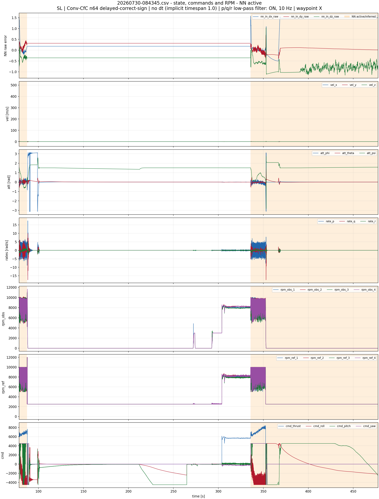
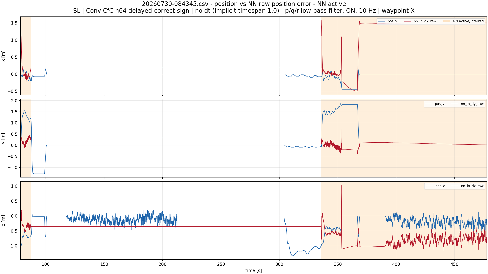
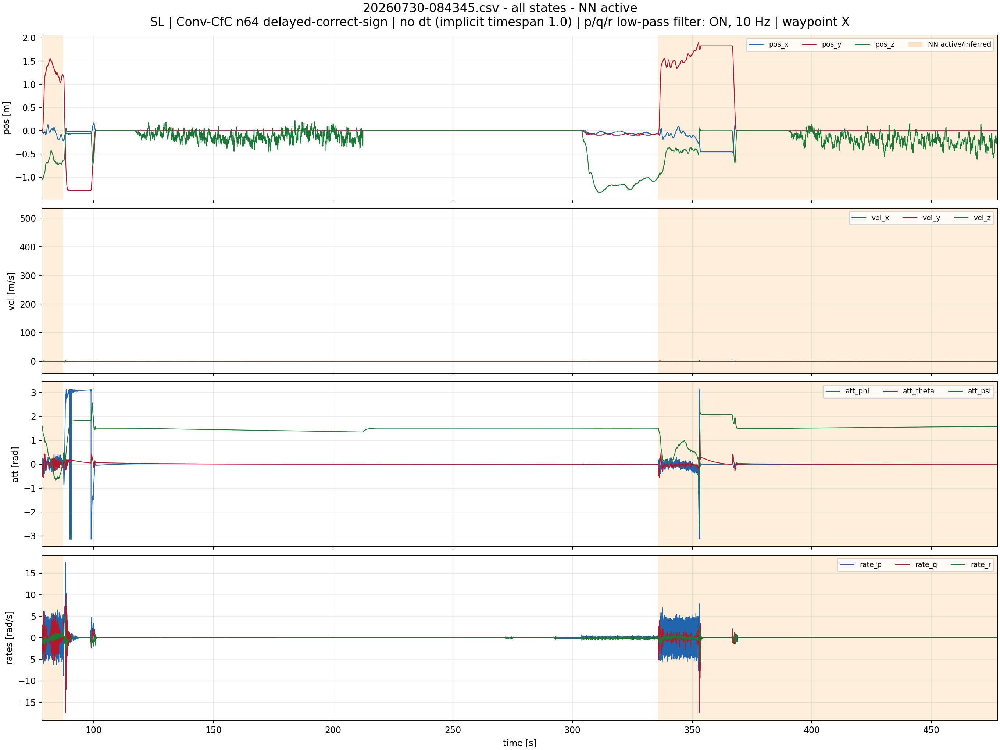
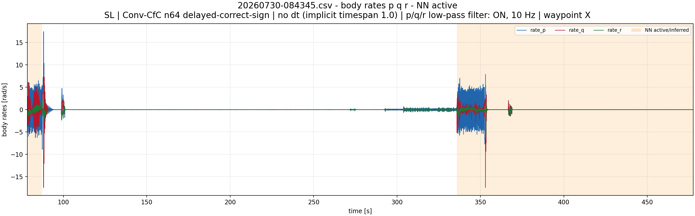
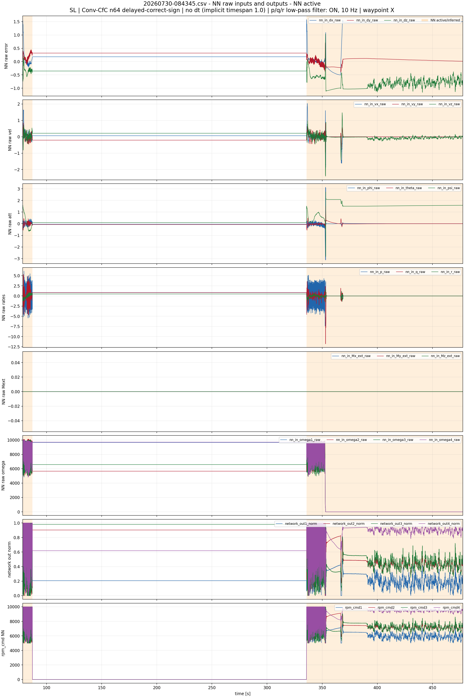
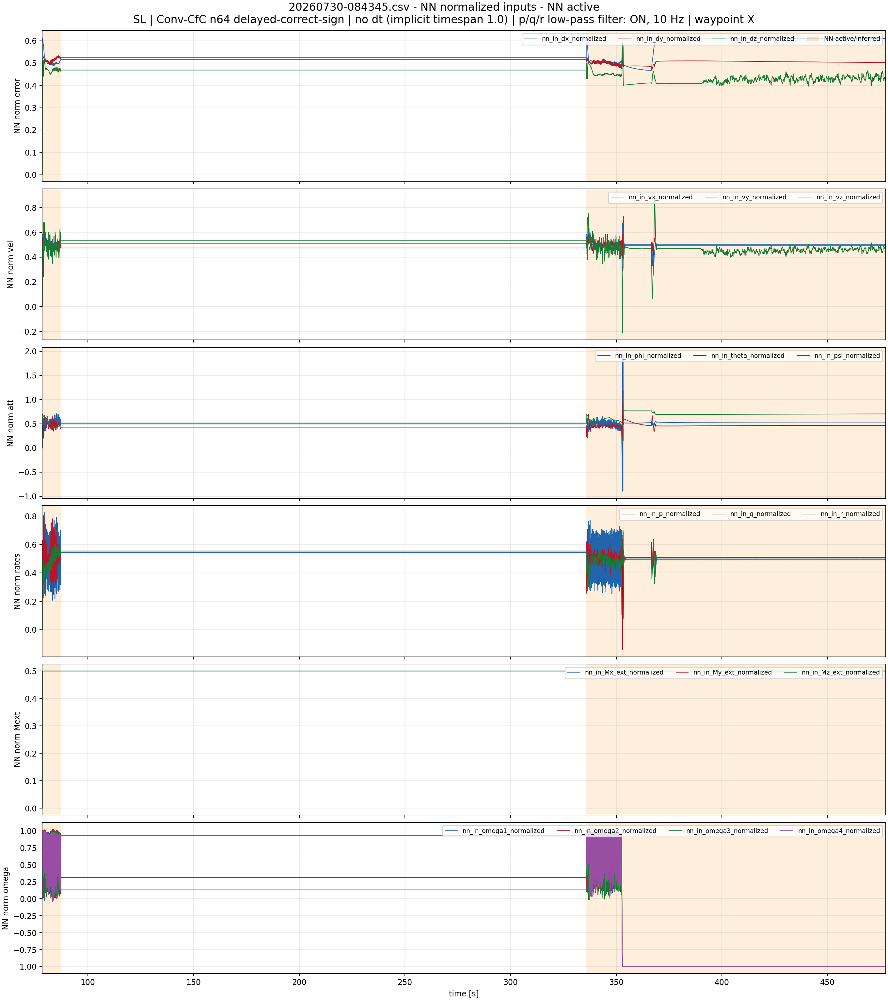
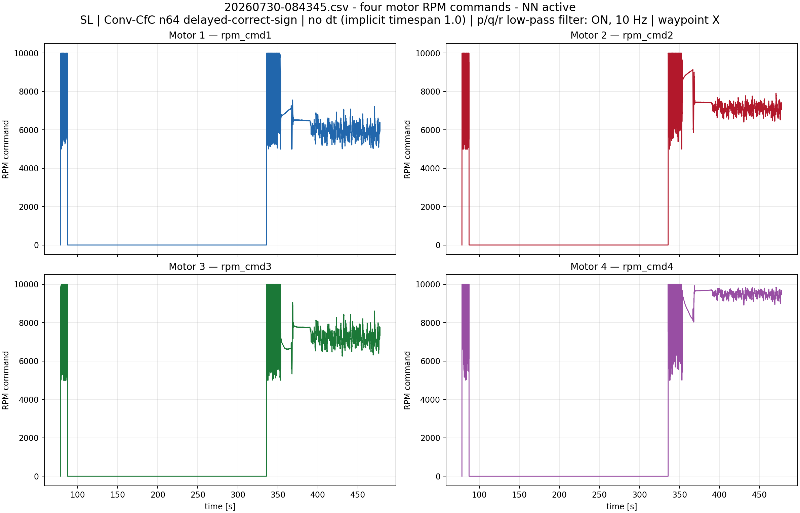
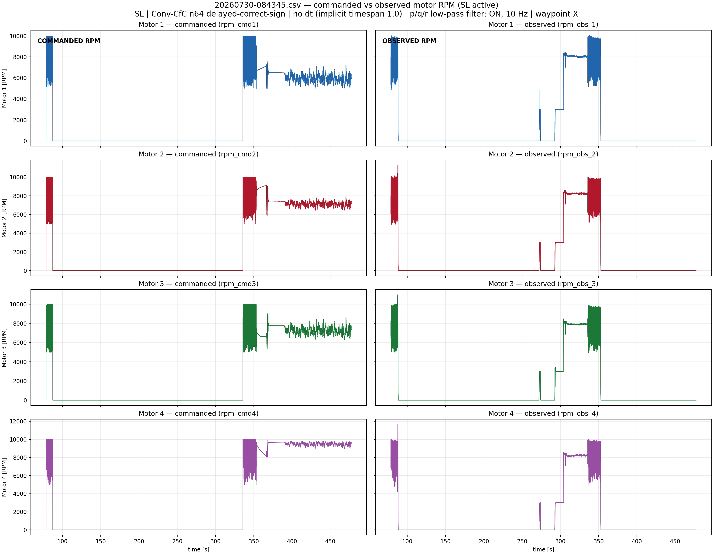

SL | Conv-CfC n64 delayed-correct-sign | no dt (implicit timespan 1.0) | p/q/r low-pass filter: ON, 10 Hz | waypoint X
Orange bands mark NN activity. For old logs without nn_enabled, activity is inferred from nn_in_*, network_out*, and rpm_cmd* becoming non-zero.
NN intervals shown: [(78.392174, 87.208572), (335.806122, 477.518921)]







